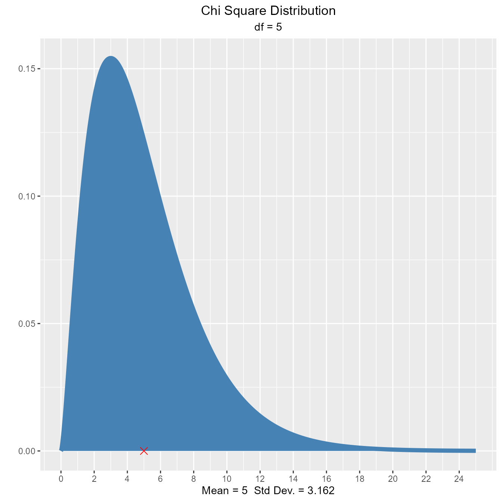
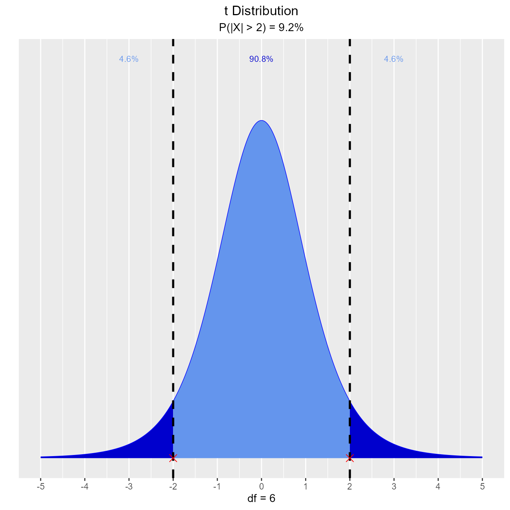

Exploring Distributions
Source:vignettes/introduction-to-vistributions.Rmd
introduction-to-vistributions.RmdIn exploring statistical distributions, we focus on the following:
- what influences the shape of a distribution
- calculate probability from a given quantile
- calculate quantiles out of given probability
To explore the above 3 concepts, we have defined functions for the following distributions:
- Normal
- Binomial
- Chi Square
- F
- t
Normal Distribution
Distribution Shape
Visualize how changes in mean and standard deviation affect the shape of the normal distribution.
Percentiles
Calculate and visualize quantiles out of given probability.
Input
- probs: a probability value
- mean: mean of the normal distribution
- sd: standard deviation of the normal distribution
- type: lower/upper tail
Suppose X, the grade on a exam, is normally distributed with mean 60 and standard deviation 3. The teacher wants to give 10% of the class an A. What should be the cutoff to determine who gets an A?
vdist_normal_perc(0.10, 60, 3, 'upper')The teacher wants to give lower 15% of the class a D. What cutoff should the teacher use to determine who gets an D?
vdist_normal_perc(0.85, 60, 3, 'lower')The teacher wants to give middle 50% of the class a B. What cutoff should the teacher use to determine who gets an B?
vdist_normal_perc(0.5, 60, 3, 'both')Probabilities
Calculate and visualize probability from a given quantile
Input
- perc: a quantile value
- mean: mean of the normal distribution
- sd: standard deviation of the normal distribution
- type: lower/upper/both tail
Let X be the IQ of a randomly selected student of a school. Assume X ~ N(90, 4). What is the probability that a randomly selected student has an IQ below 80?
vdist_normal_prob(80, mean = 90, sd = 4)
What is the probability that a randomly selected student has an IQ above 100?
vdist_normal_prob(100, mean = 90, sd = 4, type = 'upper')What is the probability that a randomly selected student has an IQ between 85 and 100?
vdist_normal_prob(c(85, 100), mean = 90, sd = 4, type = 'both')Binomial Distribution
Distribution Shape
Visualize how changes in number of trials and the probability of success affect the shape of the binomial distribution.
vdist_binom_plot(10, 0.3)
Percentiles
Calculate and visualize quantiles out of given probability
Input
- p: a single aggregated probability of multiple trials
- n: the number of trials
- tp: the probability of success in a trial
- type: lower/upper tail
vdist_binom_perc(10, 0.5, 0.05)
vdist_binom_perc(10, 0.5, 0.05, 'upper')Probabilities
Calculate and visualize probability from a given quantile
Input
- p: probability of success
- n: the number of trials
- s: number of success in a trial
- type: lower/upper/interval/exact tail
Assume twenty-percent (20%) of Magemill have no health insurance. Randomly sample n = 12 Magemillians. Let X denote the number in the sample with no health insurance. What is the probability that exactly 4 of the 15 sampled have no health insurance?
vdist_binom_prob(12, 0.2, 4, type = 'exact')What is the probability that at most one of those sampled has no health insurance?
vdist_binom_prob(12, 0.2, 1, 'lower')What is the probability that more than seven have no health insurance?
vdist_binom_prob(12, 0.2, 8, 'upper')What is the probability that fewer than 5 have no health insurance?
vdist_binom_prob(12, 0.2, c(0, 4), 'interval')Chi Square Distribution
Distribution Shape
Visualize how changes in degrees of freedom affect the shape of the chi square distribution.
vdist_chisquare_plot(df = 5)
vdist_chisquare_plot(df = 5, normal = TRUE)Percentiles
Calculate quantiles out of given probability
Input
- probs: a probability value
- df: degrees of freedom
- type: lower/upper tail
Let X be a chi-square random variable with 8 degrees of freedom. What is the upper fifth percentile?
vdist_chisquare_perc(0.05, 8, 'upper')What is the tenth percentile?
vdist_chisquare_perc(0.10, 8, 'lower')Probability
Calculate probability from a given quantile.
Input
- perc: a quantile value
- df: degrees of freedom
- type: lower/upper tail
What is the probability that a chi-square random variable with 12 degrees of freedom is greater than 8.79?
vdist_chisquare_prob(8.79, 12, 'upper')
What is the probability that a chi-square random variable with 12 degrees of freedom is greater than 8.62?
vdist_chisquare_prob(8.62, 12, 'lower')F Distribution
Distribution Shape
Visualize how changes in degrees of freedom affect the shape of the F distribution.
vdist_f_plot(6, 10, normal = TRUE)Percentiles
Calculate quantiles out of given probability
Input
- probs: a probability value
- num_df: nmerator degrees of freedom
- den_df: denominator degrees of freedom
- type: lower/upper tail
Let X be an F random variable with 4 numerator degrees of freedom and 5 denominator degrees of freedom. What is the upper twenth percentile?
vdist_f_perc(0.20, 4, 5, 'upper')What is the 35th percentile?
vdist_f_perc(0.35, 4, 5, 'lower')Probabilities
Calculate probability from a given quantile.
Input
- perc: a quantile value
- num_df: nmerator degrees of freedom
- den_df: denominator degrees of freedom
- type: lower/upper tail
What is the probability that an F random variable with 4 numerator degrees of freedom and 5 denominator degrees of freedom is greater than 3.89?
vdist_f_prob(3.89, 4, 5, 'upper')What is the probability that an F random variable with 4 numerator degrees of freedom and 5 denominator degrees of freedom is less than 2.63?
vdist_f_prob(2.63, 4, 5, 'lower')t Distribution
Distribution Shape
Visualize how degrees of freedom affect the shape of t distribution.
vdist_t_plot(df = 8)Percentiles
Calculate quantiles out of given probability
Input
- probs: a probability value
- df: degrees of freedom
- type: lower/upper/both tail
What is the upper fifteenth percentile?
vdist_t_perc(0.15, 8, 'upper')What is the eleventh percentile?
vdist_t_perc(0.11, 8, 'lower')What is the area of the curve that has 95% of the t values?
vdist_t_perc(0.8, 8, 'both')Probabilities
Calculate probability from a given quantile.
Input
- perc: a quantile value
- df: degrees of freedom
- type: lower/upper/interval/both tail
Let T follow a t-distribution with r = 6 df.
What is the probability that the value of T is less than 2?
vdist_t_prob(2, 6, 'lower')What is the probability that the value of T is greater than 2?
vdist_t_prob(2, 6, 'upper')What is the probability that the value of T is between -2 and 2?
vdist_t_prob(2, 6, 'both')
What is the probability that the absolute value of T is greater than 2?
vdist_t_prob(2, 6, 'interval')